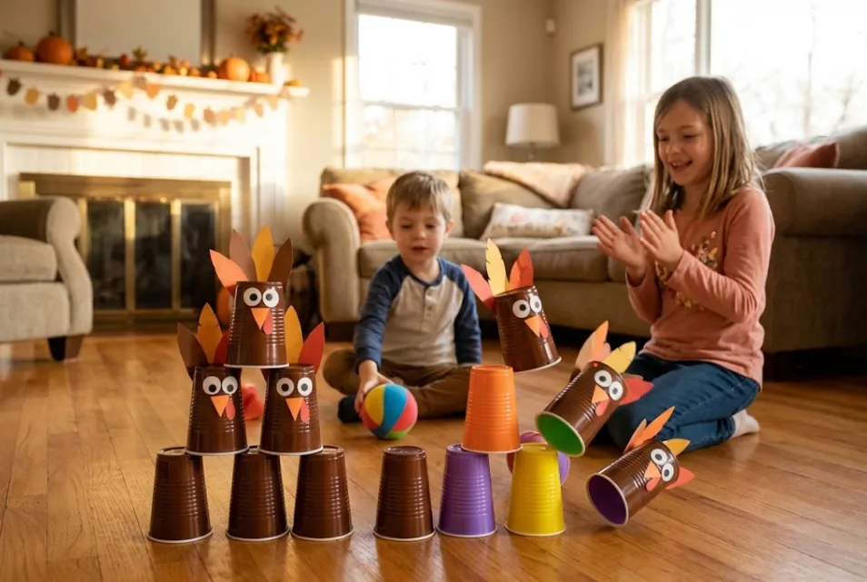
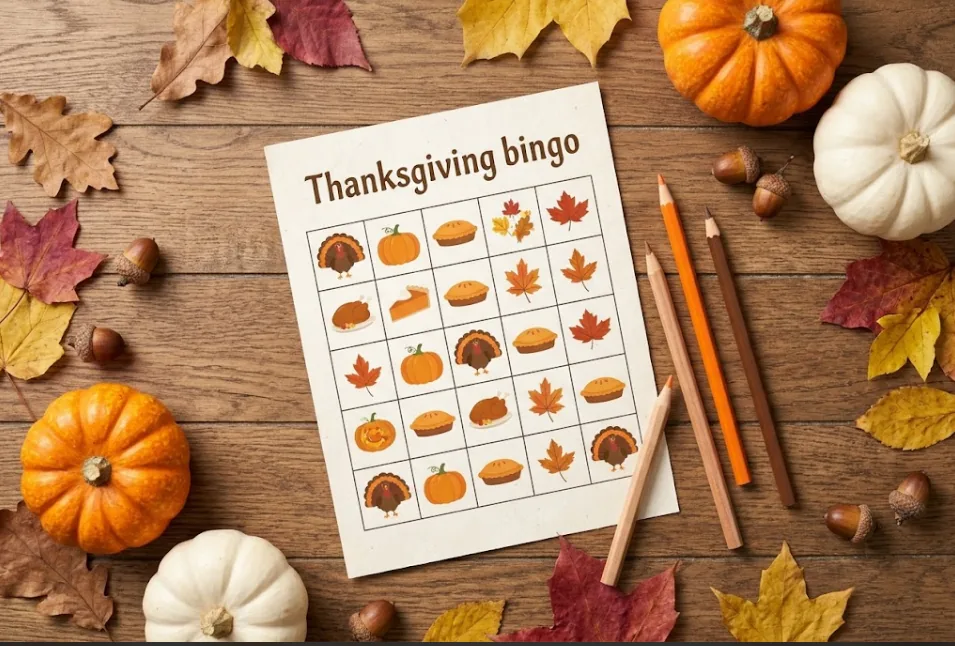

Last Updated: October 30, 2026
Quick Info
- Players: 4 or more (most games work with 30+ people)
- Time: Around 10–20 minutes per game
- Ages: Suitable for kids, teens, adults, and grandparents
- What You'll Need: Paper, pens, plastic cups, a small ball, and a few prizes
Thanksgiving is all about spending time with the people who matter most. But let's be honest: after a big dinner, there is usually a point when everyone is sitting around, the kids are getting restless, and nobody really knows what to do next. That's where a few fun games can make all the difference.
If you're looking for thanksgiving games for family gatherings, you've come to the right place. From silly challenges like Turkey Bowling to classic favorites like Charades and Thanksgiving Bingo, there are plenty of ways to keep everyone entertained. The best part? Most of these games require little to no preparation, and you probably already have everything you need at home.
Whether you're hosting a small family dinner or a gathering with 30 or more guests, these 20 ideas offer something for everyone. We've included games for kids, adults, and larger groups, along with simple instructions to help you get started.
How to Choose the Best Thanksgiving Games for Family Gatherings
Before jumping into the games, think about who's joining the celebration. A game that keeps younger children entertained might not be everyone's first choice for a group of adults. The trick is to find activities that make it easy for different generations to join in.
Here are a few things worth considering:
- Group size: Choose games that allow several people to participate at once. This helps avoid long waiting times and keeps the energy going.
- Different age groups: Mix active games with simple guessing and trivia challenges so children, teenagers, and older family members can all enjoy themselves.
- Available time: Keep each round relatively short. Around 10 to 15 minutes is usually enough to keep people interested without making the games feel like a chore.
- Preparation: Don't overcomplicate things. Some of the best games only need paper, pens, or a few household items.
A simple plan is to organize three or four games throughout the day. Start with an icebreaker before dinner, play something fun after the meal, and save a final game for the evening.
Easy Thanksgiving Games for Kids
Getting children involved can make a family gathering even more enjoyable. These thanksgiving games for kids are simple to understand, easy to organize, and fun enough to keep little ones busy while the adults enjoy some time together.
1. Turkey Bowling
Who says bowling needs a bowling alley? For this game, all you need is ten plastic cups and a small ball.
Stack the cups in a triangle shape, just like bowling pins. If you have some extra time, decorate a few cups with paper feathers to make them look like little turkeys. Let each player stand behind a starting line and roll the ball toward the cups.
Give one point for every cup knocked down. The player with the highest score after a few rounds wins.
Quick tip: Let younger children roll from a shorter distance so everyone has a fair chance. Use a lightweight ball to avoid damaging anything around the house.

2. Pin the Feather on the Turkey
This is a fun Thanksgiving version of the classic party game, Pin the Tail on the Donkey.
Draw a large turkey on a piece of poster paper, but leave its tail feathers out. Cut out separate paper feathers and write each player's name on one. Now blindfold the players one at a time, give them a gentle spin, and let them try to place their feather in the right spot.
The player who gets closest to the correct position wins.
Quick tip: This game is especially good for younger children, but older kids can join in too. Use removable tape so you can easily reposition the feathers between rounds.
3. Hide the Turkey
A little hide-and-seek with a Thanksgiving twist can keep children entertained for quite a while.
Find a small toy turkey or print out a turkey picture. Ask the children to wait in another room while someone hides it somewhere around the house. Once it's hidden, everyone can start looking.
To make things easier, give hints like "getting warmer" when someone gets close and "getting colder" when they move away.
Quick tip: Let the child who finds the turkey hide it for the next round. It gives everyone a chance to take part and keeps the game going.
4. Thanksgiving Word Scramble
If you're looking for something quieter for the kids' table, this one is a great choice.
Write down 10 Thanksgiving-related words and mix up their letters. For example:
- KEYTUR – TURKEY
- IPE – PIE
- TUMNAU – AUTUMN
- RAVYGR – GRAVY
- NOCIR – CORN
Give each child a sheet of paper and a pencil. Set a timer and see who can unscramble all the words first.
Quick tip: Pair younger children with older siblings or cousins. It turns the activity into a team challenge rather than a competition that might feel too difficult for little ones.
5. Cotton Ball Mashed Potato Relay
This game looks simple, but it can get surprisingly funny once the competition begins.
Divide everyone into two teams and place a bowl of cotton balls at one end of the room. Put an empty bowl at the other end. Each player must carry one cotton ball on a spoon and carefully walk it to the empty bowl.
If the cotton ball falls, the player has to start again. The first team to move all its cotton balls wins.
Quick tip: Make it a little more challenging by asking players to walk faster or follow a simple obstacle course. Just make sure the playing area is clear and safe.
Funny Thanksgiving Games for Adults
Once the kids have had their turn, it's time to bring the adults into the fun. These thanksgiving games for adults are perfect for getting relatives talking, sharing funny memories, and enjoying a few laughs around the table.
6. Thanksgiving Charades
You probably know how Charades works, but adding a Thanksgiving theme makes it even better.
Write different Thanksgiving-related activities and phrases on small pieces of paper. Fold them up and put them in a bowl. Players take turns picking a word and acting it out without speaking while their teammates try to guess the answer.
Here are a few ideas to get started:
- Carving the Thanksgiving turkey
- Falling asleep after dinner
- Shopping on Black Friday
- Wearing a pilgrim hat
- Eating way too much pie
Give each player 60 seconds to act out their prompt. The team with the most correct guesses wins.
Quick tip: Mix easy prompts with a few difficult and ridiculous ones. For larger families, divide everyone into teams of four or five.
7. Thanksgiving Pictionary
If your family enjoys drawing, Pictionary is another activity worth adding to your list.
You'll need a whiteboard or a large drawing pad, some markers, and a bowl of Thanksgiving-themed words. Players take turns drawing a word while their teammates try to guess what it is. Talking, writing letters, or using hand gestures to explain the answer isn't allowed.
Try words like:
- Gravy boat
- Cranberry sauce
- Pumpkin pie
- Cornucopia
- Scarecrow
Give each team 60 seconds per turn. You might be surprised by how difficult it is to draw something as simple as a turkey when everyone is watching!
Quick tip: Don't worry too much about artistic skills. Sometimes the worst drawings lead to the biggest laughs.
8. Two Truths and a Turkey
Here's a Thanksgiving twist on the classic Two Truths and a Lie game.
Ask each person to share three statements about their Thanksgiving experiences. Two should be true, while the third should be completely made up.
For example:
- I've eaten three slices of pumpkin pie in one sitting.
- I once burned the Thanksgiving turkey.
- I've never tried cranberry sauce.
Everyone else has to guess which statement is the lie. Let each person explain the real stories behind their answers once everyone has voted.
Quick tip: Encourage people to share funny or unexpected family memories. It's a great icebreaker, especially when relatives haven't seen each other for a while.
9. Thanksgiving Taboo – Don't Say Gravy!
This game is all about describing something without using the obvious words associated with it.
Prepare small cards with a Thanksgiving-related word at the top and three forbidden words underneath. For example:
Target word: Stuffing
Forbidden words: Bread, Turkey, Dinner
A player must describe the target word without saying any of the forbidden words. Their teammates have one minute to guess correctly.
You can add a timer or a buzzer to make things more exciting.
Quick tip: Make some cards easy and others ridiculously difficult. The more players have to think around the obvious clues, the funnier the game becomes.
10. Family Feud: Thanksgiving Edition
Bring the excitement of a TV game show right into your living room!
Before Thanksgiving, ask a few family members simple questions such as:
- Name something people usually eat on Thanksgiving.
- What's the first thing people do after dinner?
- Name a reason someone might take a nap after Thanksgiving dinner.
- What's something people often forget to buy?
Write down the most common answers and use them to create your own Family Feud-style game. Divide everyone into two teams and let them compete to guess the most popular responses.
Quick tip: Use answers from your own relatives whenever possible. Personal family habits and inside jokes can make this game even more entertaining.
Thanksgiving Games for Large Groups
Hosting a big Thanksgiving gathering? You'll want activities that don't leave half the guests waiting for their turn. These thanksgiving games for large groups are easy to organize and give everyone a reason to participate.
11. Thanksgiving Bingo
Bingo is one of those games that almost everyone knows how to play, which makes it perfect for a mixed-age gathering.
Create bingo cards with Thanksgiving-related words, activities, or things that might happen during the day. For example:
- Someone asks for more potatoes.
- A football game appears on TV.
- Someone talks about Black Friday shopping.
- A family member shares what they're thankful for.
- Someone goes back for another slice of pie.
Give everyone a card and a pen. As these things happen throughout the day, players mark the matching squares. The first person to complete a line horizontally, vertically, or diagonally shouts "Gobble!" and wins.
Quick tip: Make several different bingo cards so people aren't all marking the same squares at the same time.

12. Thanksgiving Trivia
Think your family knows everything about Thanksgiving? This is your chance to find out.
Prepare around 20 to 30 questions covering Thanksgiving history, traditional foods, celebrations, and fun facts. Divide everyone into teams and give them paper or small whiteboards to write their answers.
Include a mixture of easy and challenging questions so children and adults can both contribute.
For example:
- Which bird is most commonly associated with Thanksgiving?
- What month is Thanksgiving celebrated in the United States?
- What is the traditional dessert made with pumpkin?
- Which NFL teams traditionally play Thanksgiving games?
Award one point for every correct answer. The team with the highest score gets a small prize, such as choosing the first slice of pie.
Quick tip: Give teams a short time limit for each question to keep the game moving.
13. Pass the Pumpkin
This is one of the easiest thanksgiving party games to organize, especially when you have a lot of people.
Ask everyone to sit in a circle and pass a small pumpkin around while music plays. When the music suddenly stops, whoever is holding the pumpkin has to complete a fun challenge.
They can answer a Thanksgiving question, share something they're grateful for, or perform a silly dare.
Start the music again and keep playing until everyone has had a turn.
Quick tip: Use a soft ball if you don't have a small pumpkin available. For bigger groups, make two circles and play at the same time.
14. Thankful Alphabet
Want a game that's a little more meaningful but still fun? Give Thankful Alphabet a try.
Have everyone sit together in a circle. The first person names something they're thankful for that starts with the letter A. The next person uses B, then C, and so on.
You can make it more challenging by asking each player to repeat the previous answers before adding their own.
For example:
- A – A loving family
- B – Best friends
- C – Cozy home
- D – Delicious food
Keep going through the alphabet and see how far everyone gets.
Quick tip: Don't worry if the group gets stuck on difficult letters like X or Q. Creative answers are part of the fun!
15. Backyard Touch Football
If the weather is nice, take the fun outside with a friendly game of touch football.
Divide everyone into two teams and choose a simple playing area in the backyard or nearby open space. Instead of tackling, players only need to touch the ball carrier to stop the play.
You can also use flags or shirt tails to make the rules easier for younger players.
Mix different age groups on both teams and give younger children a few extra chances to score.
Quick tip: Keep the game relaxed and limit it to around 15–20 minutes. The goal is to have fun, not turn Thanksgiving into a serious football competition!
Thanksgiving Games You Can Play Indoors
Cold weather or limited outdoor space doesn't have to get in the way of a good time. These thanksgiving games indoor ideas are perfect for living rooms, dining areas, and even smaller family gatherings.
16. Gratitude Scavenger Hunt
A regular scavenger hunt is fun, but adding a gratitude theme makes it a little more special.
Prepare a list of things for players to find around the house. You can include clues such as:
- Something that makes you smile.
- A photo of someone you love.
- Something older than you.
- Something that keeps you warm.
- An item that reminds you of a happy memory.
Players can either bring back the items or explain why they chose them.
For mixed-age groups, divide everyone into pairs so younger children can team up with older family members.
Quick tip: Set a time limit of 5 to 10 minutes. This keeps the activity exciting without turning the house upside down.
17. Guess the Dish
Here's a game that puts everyone's taste buds to the test!
Prepare a few small samples of Thanksgiving foods, such as cranberry sauce, sweet potato, pumpkin pie, or mashed potatoes. Blindfold one volunteer and let them taste each sample, one at a time.
Their job is to identify each dish without looking.
Keep score by giving one point for every correct guess. Let everyone take turns so the whole family gets a chance to play.
Quick tip: Always check for food allergies before starting, use clean spoons for every sample, and make sure players are comfortable with the foods being served.
18. Thanksgiving Emoji Guess
This is a simple game that works particularly well when everyone is already sitting around the dining table.
Write down a series of emoji combinations that represent Thanksgiving-related activities, foods, or traditions. Players have to figure out what each combination means.
For example:
- 🦃🍗🍽️ = Thanksgiving Dinner
- 🍂🏈📺 = Football on Thanksgiving
- 🥧🎃🍴 = Pumpkin Pie
- 👨👩👧👦❤️ = Family Time
Give everyone a sheet of paper to write their guesses. Once all the answers are in, read them aloud and award points for correct answers.
Quick tip: Include a few tricky combinations to make things interesting. This is also a great option when you want a quiet game that doesn't require anyone to move around.
Card Games for Thanksgiving
Sometimes you don't need a complicated setup or a bunch of supplies. A simple deck of cards can provide plenty of entertainment while everyone relaxes after dinner.
19. Thanksgiving Spoons
Spoons is a fast-paced card game that can get surprisingly competitive. It works especially well when everyone is sitting around the same table.
Place one fewer spoon than the number of players in the middle of the table. Deal four cards to each player. The goal is to collect four cards of the same rank.
Players pass unwanted cards around the circle, picking up and passing one card at a time. As soon as someone collects four of a kind, they quietly take a spoon from the middle.
Everyone else must grab one too. The player left without a spoon is out. Remove another spoon and continue until only one player remains.
Quick tip: Give the winner a fun Thanksgiving-themed prize, such as a small pumpkin or a decorative pie fork. For complete instructions, check out our guide on how to play the Spoons card game.
20. Turkey Trot Scoreboard Challenge
Why play just one game when you can turn the entire day into a friendly family tournament?
Create a simple scoreboard and award points for winning any of the games throughout the day. You can give three points for first place, two for second, and one for third.
Keep adding scores as the games continue. At the end of the day, the person with the highest total becomes the Thanksgiving champion.
You can even create a funny trophy using a decorated turkey cutout, a painted paper cup, or a small homemade prize.
Quick tip: Make sure everyone has a chance to earn points, even if they aren't particularly good at competitive games. Participation can be worth points too!
Free Printable Thanksgiving Games
If you'd rather have everything ready before guests arrive, printable games are a great option. You can prepare them the night before and simply place them on the dining table when everyone arrives.
Here are a few printable thanksgiving games you can create with basic paper and a printer:
- Thanksgiving Bingo Cards: Prepare 6 to 10 different cards so multiple people can play together.
- Gratitude Scavenger Hunt Checklist: Give everyone a list of things to find or memories to share.
- Thanksgiving Word Scramble: Create a simple worksheet with mixed-up holiday words for the kids' table.
- Thanksgiving Trivia Cards: Write questions on separate cards and use them for a quick team competition.
Keep some extra pencils, crayons, and blank paper nearby. Younger children can also decorate their bingo cards or draw their favorite Thanksgiving foods while waiting for the next activity.
Tips for Hosting Thanksgiving Games Everyone Will Enjoy
Planning games is one thing, but getting everyone involved is another. A little preparation can make the difference between an awkward activity and a genuinely fun family moment.
Here are a few things to keep in mind:
- Let people join voluntarily: Not everyone enjoys playing games. Give guests the option to participate, watch, or help with something else.
- Keep prizes simple: Small treats, chocolates, a slice of pie, or the first choice of leftovers are more than enough.
- Mix up the teams: Pair children with adults and bring together relatives who don't usually spend much time with each other.
- Choose the right time: Try an icebreaker before dinner and save more active games for after everyone has eaten. Avoid interrupting the busiest part of meal preparation.
- Be mindful of allergies: Always check ingredients and food allergies before organizing tasting challenges.
- Have another game ready: Sometimes an activity doesn't go as planned. Keep a backup option so you can move on without making a big deal out of it.
Looking for more activities beyond Thanksgiving? Check out our guides to indoor recess games and Christmas party games for kids. You can also explore our family games section for more ideas to enjoy together.
Frequently Asked Questions
1. What are the best Thanksgiving games for the whole family?
Some of the best thanksgiving games for family gatherings include Turkey Bowling, Thanksgiving Charades, Bingo, Trivia, and Gratitude Scavenger Hunt. These activities are easy to organize, work for different age groups, and don't require expensive supplies.
2. What are good Thanksgiving games for adults?
Adults can enjoy games like Thanksgiving Charades, Pictionary, Two Truths and a Turkey, Thanksgiving Taboo, and Family Feud. They're great for bringing relatives together, sharing funny stories, and creating a little friendly competition.
3. What Thanksgiving games work best for large groups?
Thanksgiving Bingo, Trivia, Pass the Pumpkin, and Thankful Alphabet are excellent choices for larger gatherings. They allow several people to participate at once, so guests don't have to spend too much time waiting for their turn.
4. What are some easy Thanksgiving games with no preparation?
If you need something you can start immediately, try Thankful Alphabet, Two Truths and a Turkey, Pass the Pumpkin, or Hide the Turkey. These are easy thanksgiving games no prep activities that require little or no setup.
5. How long should Thanksgiving games last?
Most Thanksgiving games work best when each round lasts around 10 to 15 minutes. Short rounds help keep children and adults interested. If everyone is enjoying a particular game, there's nothing wrong with playing another round.
Final Thoughts
Thanksgiving doesn't have to be all about preparing food and sitting around the dinner table. Sometimes, the funniest and most memorable moments happen when everyone gets involved in a simple game.
Whether you choose Turkey Bowling with the kids, Charades with the adults, or Bingo with the entire family, the goal is to give everyone a reason to laugh and spend time together.
You don't need to organize all 20 activities, either. Pick three or four that suit your family, gather a few basic supplies, and let the fun happen naturally.
After all, the best thanksgiving games for family gatherings aren't necessarily the most creative or complicated ones. They're the games that bring everyone together and leave you with stories to laugh about long after Thanksgiving is over.